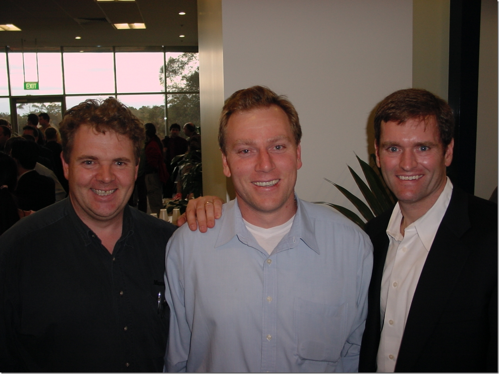

Nic was hanging out with Nick (a combination that's just asking for trouble if you ask me) a couple of weeks ago near my desk, and Nic was bemoaning the lack of a resizing utility. This triggered something in the back of my mind and lo! I found a post by Rick Strahl on (almost) this very thing. I tweaked the code a little to turn it into a console app from a web app and built it.
{kind=link}
I added a shortcut to the exe both on my desktop and in my SendTo folder so now I can right-click on an image or images and send it to the resizer and it will do its magic.

(508k) turns into this (23k):
Pretty cool!
Here's the code - most of it pinched directly from Rick remember. Note that in its current form, it makes the maximum dimension of the thumbnail 120px. You can change that at the top. I've also attached a zipped version of the solution to this post. Of course, this is provided as-is with no guarantees of stability, suitability or any other -ability. Use at your own risk, contents may be hot, don't run with scissors etc.
You could add some nice bits like:
- the ability to detect that it had been passed a folder and have the code traverse the folder and resize all the images therein.
- the ability to set the max size as part of the command line
- the ability to specify an output folder for files
- Actually handling the exceptions in ErrorResult() :)
Anyway, enough already. Go play!
using System; using System.Collections.Generic; using System.Text; using System.Drawing; using System.Drawing.Imaging; using System.IO; namespace Resizer { enum ImageSize { Default = 120, Small = 120, Medium = 240, Large = 480, Custom } class Program { static void Main(string[] args) { foreach (string Image in args) { // string Image = args[0]; if (Image == null) { ErrorResult(); return; } int Size = (int)ImageSize.Default; //if (args.Length > 1) //{ // string sSize = args[1]; // if (sSize != null) // Size = Int32.Parse(sSize); //} string Path = Image; Bitmap bmp = CreateThumbnail(Path, Size, Size); if (bmp == null) { ErrorResult(); return; } string OutputFilename = null; FileInfo OutputFile = new FileInfo(Path); OutputFilename = OutputFile.DirectoryName + "\\" + OutputFile.Name.Remove(OutputFile.Name.Length - (OutputFile.Extension.Length)) + "[" + Size.ToString().Trim() + "]" + OutputFile.Extension; if (OutputFilename != null) { try { bmp.Save(OutputFilename); } catch (Exception ex) { bmp.Dispose(); ErrorResult(); return; } } bmp.Dispose(); } } private static void ErrorResult() { //throw new Exception("The method or operation is not implemented."); } /// /// Creates a resized bitmap from an existing image on disk. /// Call Dispose on the returned Bitmap object /// /// Taken from Rick Strahl's code at /// http://west-wind.com/weblog/posts/283.aspx /// /// Bitmap or null public static Bitmap CreateThumbnail(string lcFilename, int lnWidth, int lnHeight) { Bitmap bmpOut = null; try { Bitmap loBMP = new Bitmap(lcFilename); ImageFormat loFormat = loBMP.RawFormat; decimal lnRatio; int lnNewWidth = 0; int lnNewHeight = 0; //*** If the image is smaller than a thumbnail just return it if (loBMP.Width < lnWidth && loBMP.Height < lnHeight) return loBMP; if (loBMP.Width > loBMP.Height) { lnRatio = (decimal)lnWidth / loBMP.Width; lnNewWidth = lnWidth; decimal lnTemp = loBMP.Height * lnRatio; lnNewHeight = (int)lnTemp; } else { lnRatio = (decimal)lnHeight / loBMP.Height; lnNewHeight = lnHeight; decimal lnTemp = loBMP.Width * lnRatio; lnNewWidth = (int)lnTemp; } // System.Drawing.Image imgOut = // loBMP.GetThumbnailImage(lnNewWidth,lnNewHeight, // null,IntPtr.Zero); // *** This code creates cleaner (though bigger) thumbnails and properly // *** and handles GIF files better by generating a white background for // *** transparent images (as opposed to black) bmpOut = new Bitmap(lnNewWidth, lnNewHeight); Graphics g = Graphics.FromImage(bmpOut); g.InterpolationMode = System.Drawing.Drawing2D.InterpolationMode.HighQualityBicubic; g.FillRectangle(Brushes.White, 0, 0, lnNewWidth, lnNewHeight); g.DrawImage(loBMP, 0, 0, lnNewWidth, lnNewHeight); loBMP.Dispose(); } catch { return null; } return bmpOut; } } }